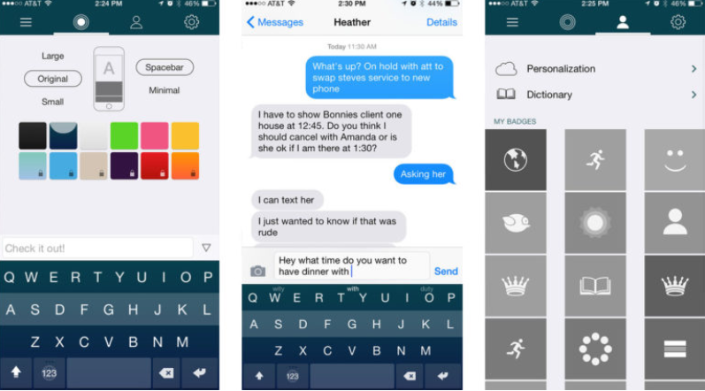
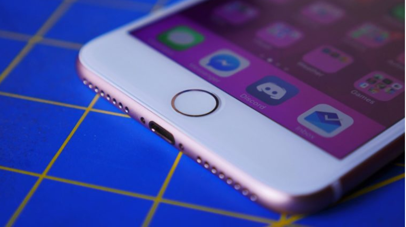
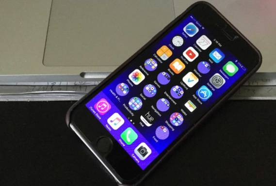
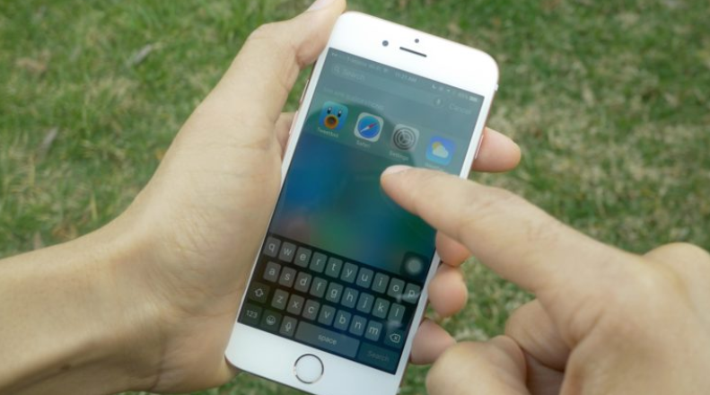

Personaliza tu iPhone al máximo sin utilizar Jailbreak
Para muchos, Jailbreak solo es una herramienta para personalizar nuestro iPhone con opciones que este no trae por defecto. Pero dicha herramienta puede causar daños en nuestro dispositivo y problemas a la hora de actualizar. Entonces, ¿Hay alguna alternativa para poder dejar el terminal a nuestro gusto? Por supuesto. A continuación, te voy a enseñar unos trucos para personalizar tu iPhone al máximo sin necesidad de hacer Jailbreak.
Cambia el fondo de pantalla

Si eres nuevo en iOS y no lo sabias, en el apartado “Fondos de pantalla y brillo” de ajustes, tendremos la opción de cambiar el fondo de pantalla de nuestro dispositivo por uno que nos guste más. No solo nos da la opción de poner un fondo predeterminado, también podemos utilizar una imagen de la galería.
Utiliza un teclado personalizado
Son teclados creados por terceros que puedes instalar en tu dispositivo, esto dará un toque único y personal. Para descargar uno, debemos buscar el teclado que más nos guste en el App Store, son muy fáciles de instalar y hay cientos para elegir. Un buen teclado que recomiendo es SwiftKey Keyboard, es gratis y tiene varios temas. Además, permite escribir arrastrando el dedo. Lo mejor es probarlo uno mismo:
Modifica la función rápida en el botón Home
Desde el menú “Accesibilidad” en ajustes, podemos ir al apartado “Función rápida”. Esto modifica el comportamiento del botón Home cuando se realiza una pulsación de 3 toques. Tendremos varias opciones para añadir, sin embargo, podemos seleccionar todas, ya que al tener más de una seleccionada, el teléfono te deja elegir cuál se ejecutará una vez realizada la función rápida. A esta lista puedes añadir herramientas como la lupa, que deberás activarla desde “Accesibilidad”.
Dock y carpetas personalizadas
Esto es más bien un glitch del sistema que nos permite modificar un poco la apariencia de nuestro Dock y carpetas. Para realizar este bug, debemos descargarnos unos fondos de pantalla en esta página web (solo disponible en inglés y chino). Tendremos diferentes fondos que nos permitirán modificar el color del Dock y las carpetas e incluso la forma de las mismas (dependiendo de dónde se coloquen en el menú). Lo mejor es probarlos y elegir el que más nos guste.
Reducir movimiento
También en el menú “Accesibilidad” de ajustes, nos dirigimos a “Reducir movimiento” y lo activamos. Después de hacer esto, nos daremos cuenta de que las animaciones del menú Home se han cambiado por un fundido mucho más rápido que la animación por defecto. Una función excelente si queremos que nuestro iPhone no pierda el tiempo con animaciones estéticas.